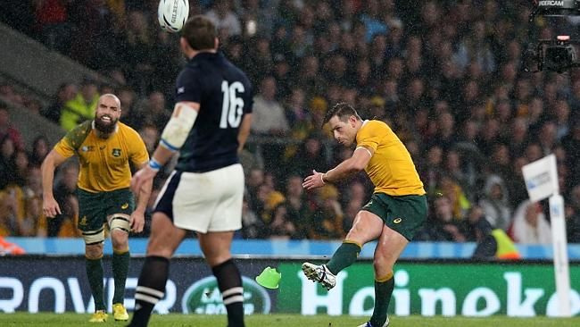
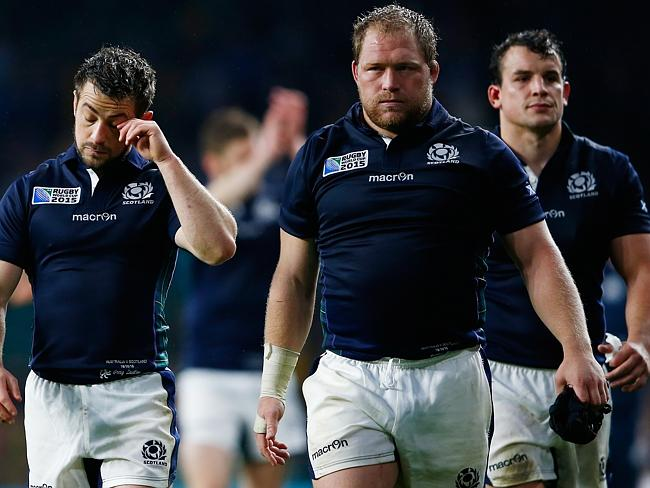
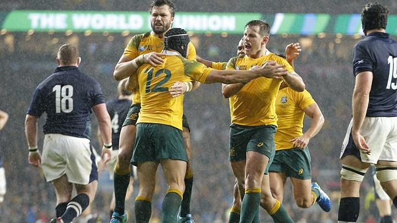

BERNARD Foley reprised his role as the “Iceman” by kicking a penalty in the 79th minute to help the Wallabies escape from jail against Scotland and qualify for the World Cup semi-finals.
Australia scraped home by a single point after the Scots turned an almighty fight in front of a Twickenham crowd roaring for them to pull off a huge upset.
The Wallabies scored five tries to three to set up a semi-final against Argentina but they looked to have one foot on the plane home when Scottish centre Mark Bennett swooped on an intercept from James Slipper in the 73rd minute and gave the Scots a two-point lead.
With rain pouring down, the Wallabies gave one last push and it was a controversial penalty call from referee Craig Joubert in the dying moments gave Australia a final shot at victory.
A line out throw then went long and was deemed to have been knocked on by a Scotsman and regathered by another in an offside position. A penalty was given and Foley stepped up and nailed it from 25 metres out.
Scottish players and fans were outraged, feeling Nick Phipps had touched the ball last and thus the penalty was not right.
Scottish captain Greg Laidlaw said Joubert should have thrown the call upstairs.
“They have got the TMO for everything else, why would you not go to the TMO for that?,” Laidlaw asked.
But while admitting the Wallabies had played poorly, coach Michael Cheika said it was a swings-and-roundabouts situation.
The Wallabies began with the sort of front-foot dominance that made the game look like a training run in the first 10 minutes, and Foley could have scored after slicing through the Scottish defence.
“That’s life. It works both ways in a game. You still have to kick it, after you get it,” he said.
The Wallabies trailed 16-15 at halftime despite scoring three tries in the opening 40 minutes to Scotland’s one.
A reach for the line would have done the job but he threw a pass to Drew Mitchell under pressure and it was dropped.
More dropped balls curtailed Australia’s inroads but eventually they got a first try when Tevita Kuridrani bumped off Scottish winger Tommy Seymour, raced upfield and freed Adam Ashley-Cooper for a run to the right corner from 20 metres out.
Scotland weren’t daunted though, and they began running with purpose. Greg Laidlaw hit a penalty after an incursion into the Wallabies’ 22, and in the 17th minute they backed it up with a try.
A strong ball carry from Ross Ford — one of two players freed on appeal from a spear tackle ban two days earlier — saw the Scots power into the Australian 22, and after cleaning out, centre Peter Horne smartly realised the Wallabies had no-one behind the ruck.
He picked up the ball and scored untouched from 10 metres out.
The Wallabies were rattled, no doubt, and things they’d relied on in previous games began to wobble under pressure. Bernard Foley dropped two high balls, the scrum gave away penalties and with no David Pocock over the ball to halt their opponents momentum, the Wallabies’ defence back peddled.
Laidlaw added another penalty to make it 13-5 before the Wallabies finally got back into the game with some sustained possession, and they used their forwards to bash it up narrowly and laid siege to Scotland’s line.
After 16 phases, the ball was finally swung far left to Drew Mitchell and the winger raced in untouched as a man over.
A third Laidlaw penalty — the second against Scott Sio at scrum-time — pushed Scotland further out but in the shadow of halftime the Wallabies pushed for a try by turning down a penalty and kicking of the corner.
Two rolling mauls worked a treat, and Michael Hooper dived in.
Foley’s third missed conversion meant Australia still trailed, however.
The second half saw Scotland down a man when Sean Maitland was determined to have deliberately knocked a pass down and was yellow-carded.
The Wallabies returned to the rolling maul, and after pushing the Scottish line, they moved the ball to Maitland’s vacant side and Mitchell scored a second unmarked.
Scotland took another penalty and another Wallabies try went begging in the 48th minute when Adam Ashley-Cooper dived in but a replay showed Genia had knocked the ball on at the previous ruck.
Foley hit a penalty soon after but Scotland refused to lie down and Foley was to blame: a nothing chip kick in his own 30 metres was charged down by Finn Russell, and he popped up a ball to Seymour who scored.
Stuart Hogg stopped Ashley-Cooper again in the 60th minute with a try-saver but Kuridrani made amends in the 65th minute when a stolen line out saw sustained phase attack saw the centre poke through a gap and reach out to score.
Scotland refused to yield, and a fifth Laidlaw penalty saw them draw within five with 10minutes to go.
The unthinkable became a heart-thumping possibility when James Slipper had a brain explosion in the 73rd minute and threw an intercept pass that gave Bennett a try under the posts and Scotland a one-point lead and a thrilling finish.